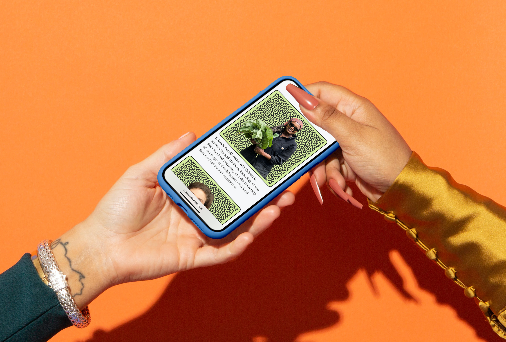
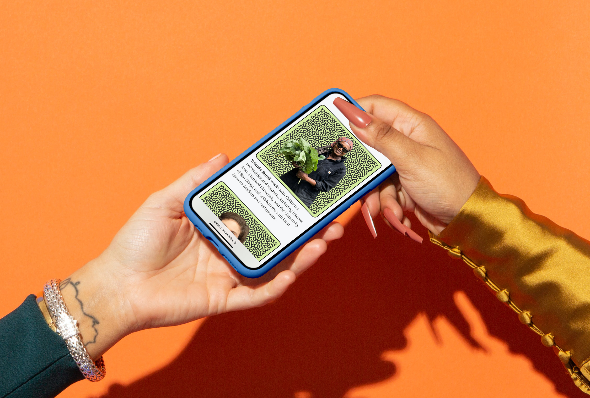
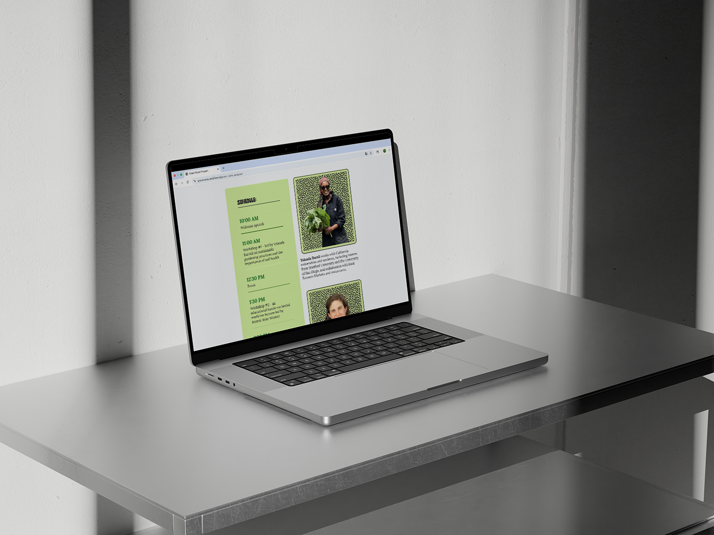
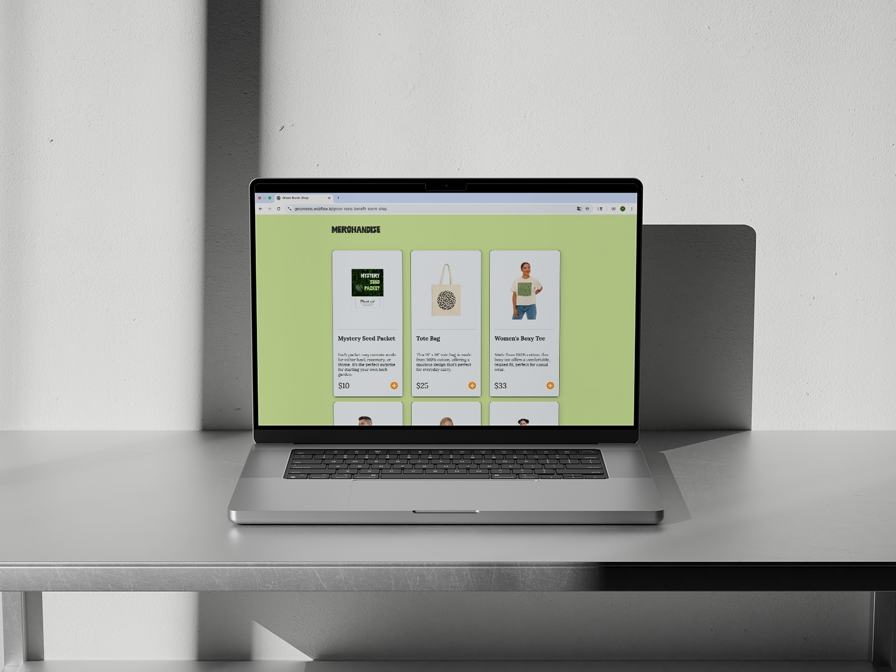
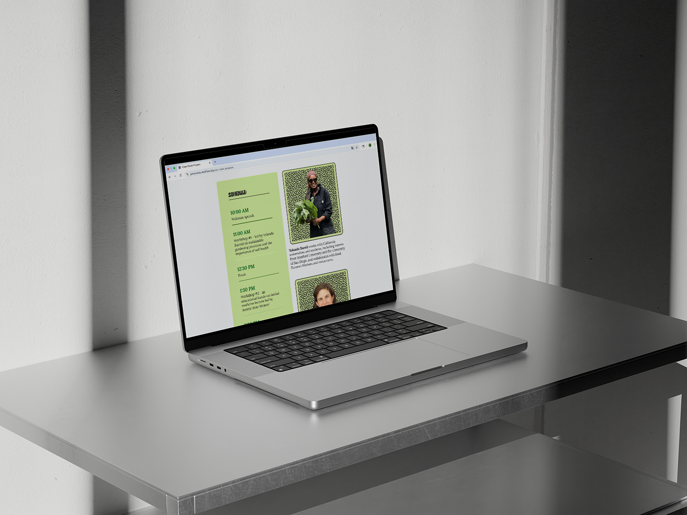
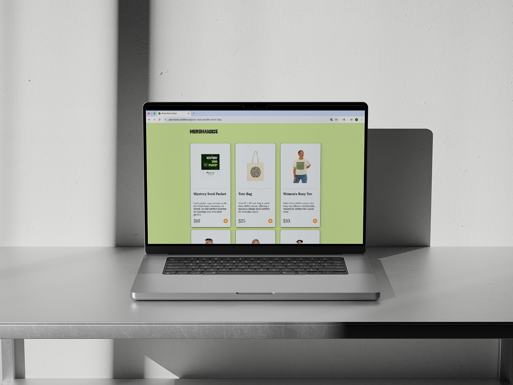

Green Roots
Fall 2024
Brand Design, Website
 

 



Concept
"Green Roots" is a fictional benefit event designed to promote sustainable gardening and the use of herbs as an alternative to traditional medicine in and around San Francisco. The event brings together local farm owners and an herbalist from the Bay Area as guest speakers, offering educational workshops to teach attendees about farming practices and the medicinal benefits of herbs. Targeting young people and families, Green Roots provides an accessible way to learn about sustainable practices and natural remedies.
Brand Identity
The comprehensive brand guide features logo variations, typography treatments, textures, and patterns that align with the event's ethos. A key design element is a custom pattern resembling roots, created in Photoshop, which symbolizes the event's focus on growth and sustainability. The visual identity creates a cohesive system across all touchpoints, from the website to merchandise and event materials.
Website & Production
The website was created using Webflow, with the initial concept and layout designed in Figma. The project includes event schedule planning and merchandise design and production. Green Roots integrates both educational and community-focused elements, with a clear intention to inspire change and promote environmental awareness throughout the Bay Area.